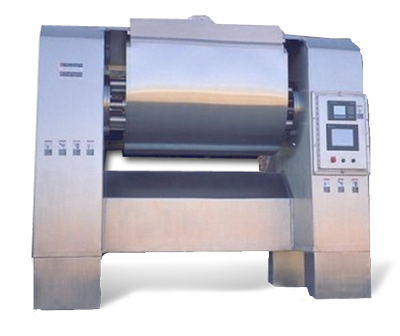
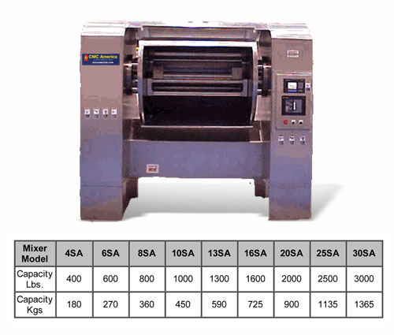

Let’s start with the ingredients. That’s what matters most.
At CMC-America, we bring over 125 years of leadership in the baking industry, driven by innovation, patented dough mixing technology, and a commitment to superior quality and craftsmanship.

Built to LastAt CMC-America, we bring over 125 years of leadership in the baking industry, driven by innovation, patented dough mixing technology, and a commitment to superior quality and craftsmanship. Our “family” of world-famous customers trusts our well-known “built to last” reputation. Ingredients matter—and so do results. That’s why we use only the finest ingredients and reinforce our customers’ trust in our quality with every production run. When you entrust your ingredients to our equipment, you can expect results that truly make a difference.
Equipment engineered for every operation

CMC America. Proud Manufacturers of Industrial Dough Mixers and Bakery Equipment for the World.
Since 1888, the industrial dough mixers and bakery equipment made in our hometown of Joliet, Illinois have been known across the globe as “Champions”. We serve the needs of bakeries and food processors with reliable, innovative and high-quality products that keep your operation humming, and your end customers satisfied.
Let’s talk about your operation.
Tell us what you are looking for and our team will help you find the right equipment for your bakery or food-processing line.